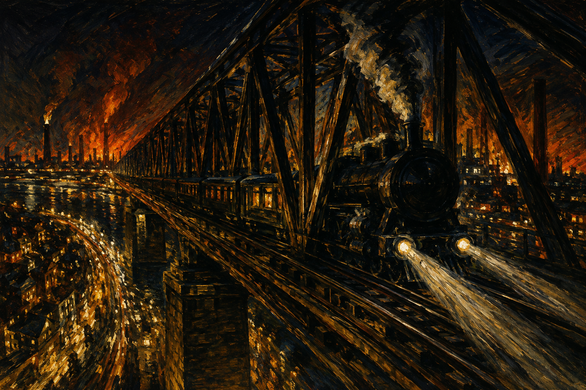

Der Schnellzug tastet sich / und stößt die Dunkelheit entlang.
der Schnellzug（快车、特快列车）tastet sich（摸索着前行）——列车被写成在黑暗中"摸索"的盲者。stößt … entlang（一路推开）赋予黑暗以实体感：黑暗不是空无，而是被列车推开的东西。这是表现主义对技术的态度：不是批判，而是眩晕。
夜行科隆莱茵桥
《Der Aufbruch》（1914）·「Die Spiegel」辑
表现主义
收入诗集《Der Aufbruch》（Kurt Wolff, Leipzig 1914）·「Die Spiegel」辑

图片由 AI 生成
Der Schnellzug tastet sich / und stößt die Dunkelheit entlang.
der Schnellzug（快车、特快列车）tastet sich（摸索着前行）——列车被写成在黑暗中"摸索"的盲者。stößt … entlang（一路推开）赋予黑暗以实体感：黑暗不是空无，而是被列车推开的东西。这是表现主义对技术的态度：不是批判，而是眩晕。
Die ganze Welt ist nur ein enger, / nachtumschienter Minengang,
Minengang（矿坑巷道）+ nachtumschienter（被夜色上了甲的，自造复合词）——夜行列车被比作矿坑里的穿行：封闭、黑暗、工业化。注意行长：第3行（Die ganze Welt ist nur ein enger,）已明显长于普通诗行——这是"长行诗"（Langzeile）的样本。
Darein zuweilen Förderstellen / blauen Lichtes jähe Horizonte reißen: Feuerkreis
无连词并列（Asyndeton）与名词堆叠：采掘面、蓝色光焰、骤然的地平线、火的环——感官材料不加整理地并置。长行不是把句子拉长，而是把一串名词挤进一行。
Als führen wir ins Eingeweid der Nacht zur Schicht.
das Eingeweid（内脏）+ zur Schicht（去上工，矿工的轮班）——"驶入黑夜的内脏去上工"。黑暗被身体化（内脏），列车之旅被劳动化（上工）。
Wir fliegen, aufgehoben, / königlich durch nachtentrissne Luft, hoch übern Strom.
★全诗的狂喜高潮：列车过桥的一刻，"我们飞翔起来，被托举着，王者般……"。aufgehoben（被托举）兼"被扬弃"（黑格尔 aufheben）义。nachtentrissne（从夜中夺走的，自造复合词）。表现主义对技术的态度在这里是"王者般的狂喜"——不是批判，而是眩晕。
Stille. Nacht. Besinnung. Einkehr. Kommunion.
末段转入等长单词的罗列：静默、夜、沉思、内省、圣餐——纯名词句，一个词一个句号。这与本站《世界末日》（编号33）的 Reihungsstil 是同一时期的两种解法：一首把句子切成八段等长主句，一首把句子拉成一条不断的线（本诗前半），再切成单词（本诗末段）。
Zur Wollust. Zum Gebet. Zum Meer. / Zum Untergang.
末两行以四个"投向……"（Zum …）收束：情欲、祈祷、大海、沉沦。狂喜最终滑向"沉沦"（Untergang）——表现主义的现代性眩晕以自我消融为终点。
本诗中未标注需要特别说明的不规则动词变位。
第6行 blau-en Lich-tes jä-he Ho-ri-zon-te rei-ßen: Feu-er-kreis ＝ 15 音节 ‖ 第1行 Der Schnell-zug tas-tet sich ＝ 6 音节
entlang／Minengang（第2、4行）‖ Schicht／dicht（第10、12行，跨节）‖ Wacht／Nacht（第20、23行，跨节）
dampfend, strömend ... / Stille. Nacht. Besinnung. Einkehr. Kommunion.
dampfend, strömend … / taumeln … verirrt, trostlos vereinsamt … / bleichend, tot
恩斯特·施塔德勒（1883—1914）是德语早期表现主义的重要诗人，生于阿尔萨斯。他曾翻译惠特曼《草叶集》，惠特曼的自由长行深刻影响了他的诗——本诗的长行（Langzeile）即其来路。（惠特曼影响的具体证据，待进一步核实。）
《夜行科隆莱茵桥》是他的代表作，收入1914年诗集《Der Aufbruch》（"出发/觉醒"）。诗写一次夜间列车过莱茵桥的经历：黑暗—隧道—城市灯火—过桥的狂喜—再入黑暗—最终的孤寂与"沉沦"。它的形式是表现主义中最极端的长行诗：每行绵延不绝，感官材料无连词地堆叠，末段则切成等长单词。施塔德勒对现代技术的态度不是批判，而是"王者般的狂喜"（königlich）——这与海姆（编号37《城市之神》）把都市写成吃人之神形成对照。
施塔德勒1914年10月30日死于伊普尔附近的一战战场，与海姆、特拉克尔、施特拉姆同属表现主义早期夭折的一代。
中文译文为本站学习译文（AI 辅助），采用直译。说明：(1) 长行（Langzeile）的绵延感译文尽量以长句保留，但汉语无德语那样的嵌套能力，部分长行略作断句；(2) 无连词并列（dampfend, strömend …）译文保留逗号罗列；(3) 末段单词罗列（Stille. Nacht. Besinnung. …）译文照办（静默。夜。沉思。内省。圣餐。）；(4) 自造复合词（nachtumschienter、nachtentrissne）译文直译并注。本诗与本站《罗马的喷泉》（行长极端反面）、《世界末日》（罗列式句法 Reihungsstil）构成表现主义形式的三种解法，建议对照。
【三源核对】正文以 Zeno.org《施塔德勒著作》第1卷（Der Aufbruch，1954，S.160–162）为一级来源著录（本次主机拒绝连接），读法由两个直接抓取的独立来源交叉确认：gedichte7.de（三级）、aphorismen.de（二级）。34 行、4 节（10/6/6/12）——用词一致。
【分节与省略号异文】(1) 分节依评注本（Zeno）的段落停顿：在"nur sekundenweis …"后、在"Eine Beklemmung singt im Blut."后、在收束段前断节；gedichte7 另在"Salut von Schiffen"前多一断（5节）。本站从评注本的4节（10/6/6/12）。(2) 省略号：Zeno 评注本作三点 spaced dots（…）；gedichte7 作单符省略号（…）；aphorismen 作两点（..）。(3) 破折号："tot –" Zeno/gedichte7 作 en-dash，aphorismen 作 hyphen。用词无别。
【自造复合词】nachtumschienter（被夜色上甲的）、nachtentrissne（从夜中夺走的）为施塔德勒的表现主义复合造词，各源一致。
【待进一步核实】(1) 惠特曼影响的具体证据（施塔德勒译《草叶集》，但长行是否直接源自惠特曼，待回核）；(2) 阵亡地点与日期（1914年10月30日，伊普尔附近，通行说法，未回核一手）；(3) Zeno 主机本次拒绝连接，页码据著录，待恢复后补抓。
【公版】施塔德勒1914年阵亡，公版起始年 = 1914 + 71 = 1985。
本诗现满足规则 A（≥3 来源）、B（≥3 独立运营方：zeno / possel / aphorismen）、D（含一级来源：Zeno 全集本 S.160–162）。